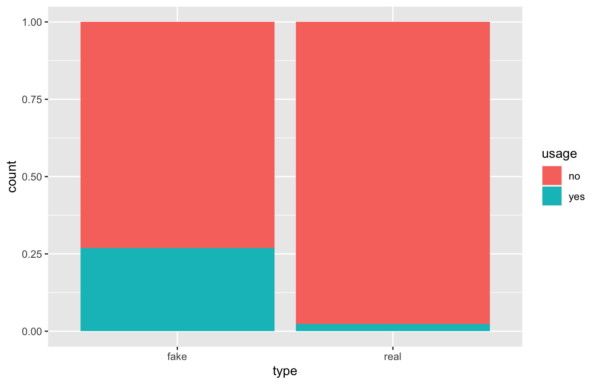
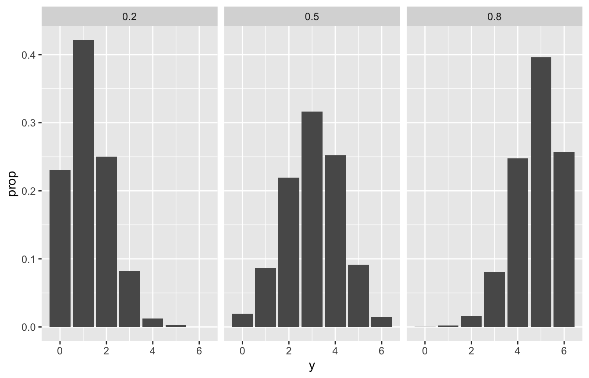

# Load packages
library(bayesrules)
library(tidyverse)
library(janitor)
# Import article data
data(fake_news)
perc <- scales::label_percent(accuracy = 1)
perc2 <- scales::label_percent(accuracy = 0.01)Reading notes
Bayes’ Rule
How many are fake vs. real?
fake_news %>%
count(type) %>%
adorn_totals("row")
## type n
## fake 60
## real 90
## Total 15060/150 or 40% of news articles are fake .
How is the use of exclamation marks distributed across fake and real news articles?
fake_news %>%
tabyl(title_has_excl, type) %>%
adorn_totals("row")
## title_has_excl fake real
## FALSE 44 88
## TRUE 16 2
## Total 60 9016/60 or 26.67% of news articles with !s are fake; only 2/90 or 2.22% of real articles with have !s.
Our prior is thus that 40% of news articles are fake. We have new data, that !s are more common in fake news articles. So what’s the posterior if we find an article with a !?
The chance that this article is fake jumps from 40% to roughly 90%. Though exclamation points are more common among fake articles, let’s not forget that only 40% of articles are fake.
Conditional probabilities
We have two variables:
- Fake vs. real status
- Use of exclamation points
These features can vary at random across different articles, so we have to represent that randomness with probabilities models
Prior probability model
We know from previous data that 40% are fake and 60% are real. If \(B\) means the article is fake, we can write that as
\[ P(B) = 0.40 \text{ and } P(B^c) = 0.60 \]
Conditional probability
The occurrence of !s depends on fakeness. Conditional probabilities of !s and fakeness, where \(A\) is the use of an exclamation mark:
\[ P(A \mid B) = 0.2667 \text{ and } P(A \mid B^c) = 0.0222 \]
By comparing conditional vs. unconditional probabilities, we learn how much \(B\) can inform our understanding of \(A\).
An event \(A\) might increase in probability given \(B\), like how the probability of joining an orchestra is greater if we know someonw practices daily:
\[ P(\text{join orchestra} \mid \text{practice daily}) > P(\text{join orchestra}) \]
Or the probability of getting the flu is lower if you know someone washes their hands a lot:
\[ P(\text{get flu} \mid \text{wash hands regularly}) < P(\text{get flu}) \]
Likelihood
Likelihood is kind of like the inverse of probability (not really! just that the order of A and B matters)
If we know \(B\), the conditional probability \(P(\cdot \mid B)\) lets us compare the probabilities of an unknown event \(A\) (or \(A^c\)) occurring with \(B\), or
\[ P(A \mid B) \text{ vs. } P(A^c \mid B) \]
If we know \(A\), the likelihood function \(L(\cdot \mid A) = P(A \mid \cdot)\) lets us compare the relative compatibility of data \(A\) with events \(B\) or \(B^c\)
\[ L(B \mid A) \text{ vs. } L(B^c \mid A) \]
What this looks like in practice, where \(A\) means having an exclamation mark and \(B\) means being fake:
# Prior probability
row_prior <- fake_news %>%
count(type) %>%
mutate(prop = n / sum(n)) %>%
select(-n) %>%
pivot_wider(names_from = type, values_from = prop)
# Likelihood
row_likelihood <- fake_news %>%
count(type, title_has_excl) %>%
pivot_wider(names_from = title_has_excl, values_from = n) %>%
mutate(likelihood = `TRUE` / (`TRUE` + `FALSE`)) %>%
select(-c(`FALSE`, `TRUE`)) %>%
pivot_wider(names_from = type, values_from = likelihood)
bind_cols(Statistic = c("Prior probability", "Likelihood"),
bind_rows(row_prior, row_likelihood)) %>%
mutate(Total = fake + real) %>%
rename(`Fake ($B$)` = fake,
`Real ($B^c$)` = real) %>%
knitr::kable(digits = 3)| Statistic | Fake (\(B\)) | Real (\(B^c\)) | Total |
|---|---|---|---|
| Prior probability | 0.400 | 0.600 | 1.000 |
| Likelihood | 0.267 | 0.022 | 0.289 |
Normalizing constants
The last piece we need is the marginal probability of observing exclamation points across all articles, or \(P(A)\), which is the normalizing constant, or \(P(B)L(B \mid A) + P(B^c)L(B^c \mid A)\)
fake_news %>%
count(type, title_has_excl) %>%
mutate(prop = n / sum(n)) %>%
filter(title_has_excl == TRUE) %>%
summarize(normalizing_constant = sum(prop))
## normalizing_constant
## 1 0.12Final analytical posterior
Thus, given this formula:
\[ \text{posterior} = \frac{\text{prior} \times \text{likelihood}}{\text{normalizing constant}} \]
…we have
\[ \text{posterior} = \frac{0.4 \times 0.2667}{0.12} = 0.889 \]
Simulation
We can simulate this too
sim_params <- tibble(type = c("real", "fake"),
prior = c(0.6, 0.4))
set.seed(1234)
sims <- sample(sim_params$type, size = 10000, prob = sim_params$prior, replace = TRUE) %>%
enframe(value = "type") %>%
mutate(data_model = case_when(type == "fake" ~ 0.2667,
type == "real" ~ 0.0222)) %>%
rowwise() %>%
mutate(usage = sample(c("no", "yes"), size = 1,
prob = c(1 - data_model, data_model))) %>%
ungroup()
sims %>%
tabyl(usage, type) %>%
adorn_totals(c("col", "row"))
## usage fake real Total
## no 2914 5872 8786
## yes 1075 139 1214
## Total 3989 6011 10000
ggplot(sims, aes(x = type, fill = usage)) +
geom_bar(position = position_fill())
# Posterior
sims %>%
filter(usage == "yes") %>%
count(type) %>%
mutate(prop = n / sum(n))
## # A tibble: 2 × 3
## type n prop
## <chr> <int> <dbl>
## 1 fake 1075 0.886
## 2 real 139 0.114Chess simulation
chess <- c(0.2, 0.5, 0.8)
prior <- c(0.1, 0.25, 0.65)
set.seed(1234)
chess_sim <- tibble(pi = sample(chess, size = 10000, prob = prior, replace = TRUE)) %>%
mutate(y = rbinom(n(), size = 6, prob = pi))
chess_sim %>%
count(pi) %>%
mutate(prop = n / sum(n))
## # A tibble: 3 × 3
## pi n prop
## <dbl> <int> <dbl>
## 1 0.2 986 0.0986
## 2 0.5 2523 0.252
## 3 0.8 6491 0.649
chess_sim %>%
ggplot(aes(x = y)) +
stat_count(aes(y = ..prop..)) +
facet_wrap(vars(pi))